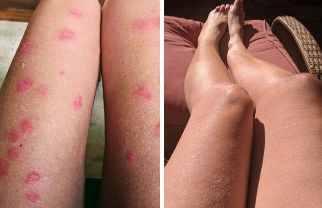
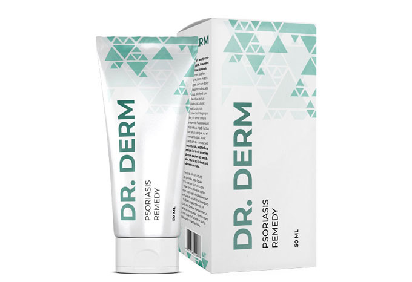

Автор: Диана Красимирова |
Автор: Диана Красимирова |
Здравейте!
Искам да споделя с Вас, скъпи приятели, как излекувах себе си и дъщеря си от псориазиса, и на нас това наистина ни помогна.
Краката ми преди и след като се излекувах от псориазис
Рани от бонбони
Всичко започна в ранна възраст, когато ходих на детска градина. На ръцете ми се появиха червени петна под формата на малки люспи. След това – под коленете и на лактите. Мама си мислеше, че раните са от бонбони и мандарини, защото такова много сладко в детството ми имаше само на Нова година.
Празниците свършиха, а аз не се почувствах по-добре: червените петна започнаха да се лющят и да се пръскат до кръв, беше много болезнено! В крайна сметка бях ми поставиха диагноза: псориазис.
 Болестта се превърна моята присъда
Болестта се превърна моята присъда
До завършването на университета се мазах с различни кремове и гелове, изписани от лекарите, всички на базата на бетаметазон с глюкокортикостероид, т.е. хормонални. А това е много опасно, напълно убива имунитета. Ами, какво да се прави?! Трябваше някак си да излекувам раните си.
Мама слушаше съветите на приятелите си и носеше различни мехлеми, приготвени от лечители, правеше мехлеми в местните аптеки, но всички усилия бяха напразни, болестта се връщаше отново и отново.
Брак
Омъжих се по време на ремисия, родих дете. Когато болестта ми се върна, съпругът ми, като видя това, избяга от мен като от прокажена. Освен това, обвини тъщата, че не го е предупредила за болестта ми. Разведох се, и заедно с майка ми и дъщеря ми заминахме да живеем на морето. Мислех си, че слънцето и солената вода ще повлияят на здравето ми, но нищо не се промени. Прибрахме се вкъщи.
 Морето не ме спаси от псориазиса
Морето не ме спаси от псориазиса
През цялото това време майка ми ме подкрепяше и ми помагаше в домакинството, переше, когато все още нямаше модерни перални машини. Ръцете ми отново и отново се покриваха с розова кора и се пукаха до кръв със страшна сила! Те често бяха превързани, така че майка ми цялото време беше около мен и се опитваше да ми помогне.
Правеше салати, защото ръцете ми се дразнеха от всичко: кисели краставички, домати – всички продукти, които пускат сок. Разбира се, тя наистина искаше да ми помогне и да ми улесни живота.
 Ръцете ми преди и след лечението
Ръцете ми преди и след лечението
На ръба на депресията
Бях свикнала с факта, че майка ми е винаги до мен – обработваше раните ми, превързваше ме, правеше всичко за мен ... Просто свикнах да живея с тази болест. Но когато на дъщеря ми й излезе псориазис, изпаднах в истинска депресия.
Последното нещо, което исках беше тя да мине през всички тези кръгове на ада, през които на мен ми се наложи да мина. Най-лошото е, че опитахме всички методи и нито един от тях не се оказа толкова ефективен, че да ме избави от псориазиса завинаги. Това означаваше, че няма да мога да излекувам и дъщеря си.
 Беше ми много болно да гледам на болестта на дъщеря
ми...
Беше ми много болно да гледам на болестта на дъщеря
ми...
Нова надежда
Знаейки за моя проблем, веднъж на майка ми на работа й в счетоводството и дадоха диск с видеозапис на лечение на псориазис. Когато седнахме пред компютъра и на екрана видяхме симптоми, подобни на моите, аз се разплаках. Един известен учен, доктор на медицинските науки Николай Денчев разказваше за това как може да се излекува псориазиса.
Оказа се, че има лекарство, което не съдържа хормони. То се нарича . Производителите твърдят, че то има кумулативен ефект. Според професора, лекарството прониква в дълбоките слоеве на епидермиса и лекува кожата отвътре.
Използването на курс с помага да се постигне едва ли не доживотна ремисия. Просто трябва да се стараеш да спазваш инструкциите.

Псориазисът е победен
Мислех си, че ще бъде много трудно, но майка ми ме взе под контрол и следеше точно, кога и как използвам лекарството. Болестта започна бавно да отстъпва. Люспите се превръщаха в розови петна, а след това изчезваха напълно. Използвах крема 5-6 пъти на ден, точно по часовник.
За курса на лечение напълно се отървах от болестта и излекувах дъщеря си. Не мога да Ви опиша колко се притеснявах, че детето ми ще преживее целия този кошмар, през който бях минала. Слава Богу, сега съм сигурна, че това няма да се случи.
 Дъщеря ми и аз успяхме да се излекуваме
заедно!
Дъщеря ми и аз успяхме да се излекуваме
заедно!
И моите красиви, поддържани ръце сега са украсени от годежен пръстен (преди се срамувах да нося бижута на пръстите си). И любимият ми мъж дори не знае, че някога съм имал псориазис!
Обичам Ви всичките! Благодаря за това, че този клип и това лекарство навреме ми попаднаха. Използвайте това лекарство и ще бъдете здрави, и щастливи!